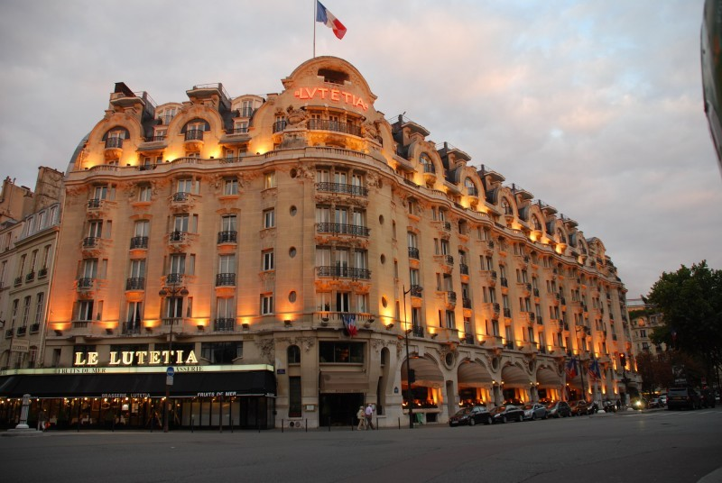
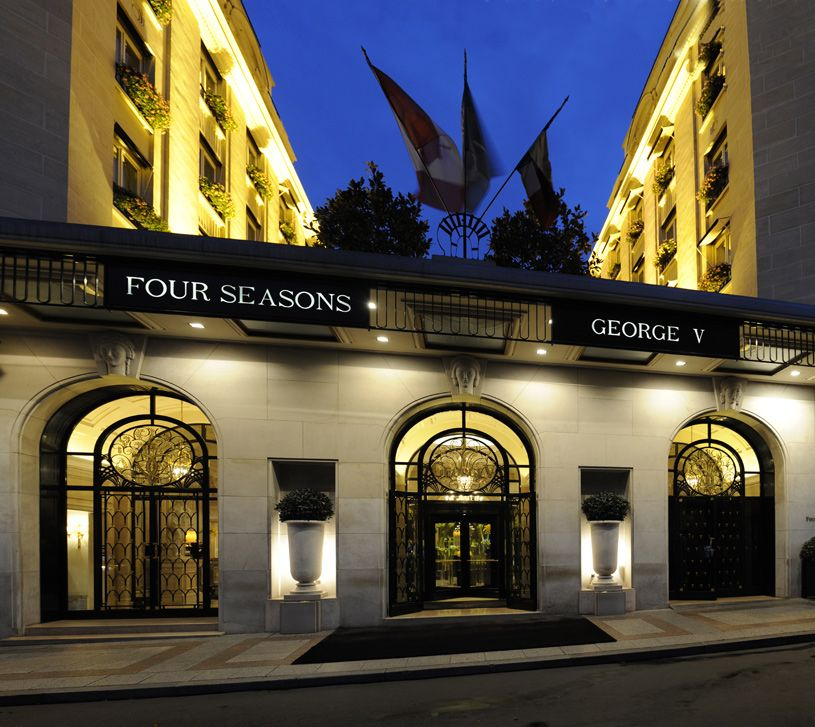
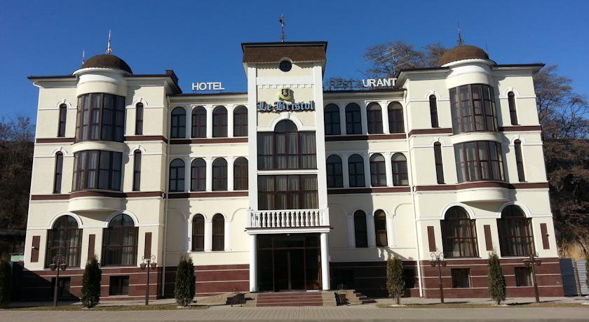
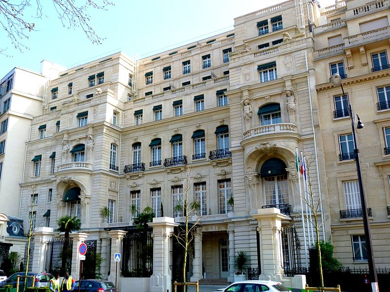

Расположение:
Отель Lutetia– настоящая легенда парижского артистического квартала Сен-Жермен-де-Пре и единственный Гранд-Отель на Левом Берегу города.
Размещение:
- Superior (26кв. м)
- Deluxe (40кв. м)
- Grand Superior (33 кв. м)
- Deluxe room с балконом(40кв. м)
- Eiffel Deluxe room с балконом(40кв. м)
- Junior люкс(50кв. м)
- Junior люксс балконом(50кв. м)
- Lutetiaлюкс(52кв. м)
- Deluxe Suite(55кв. м)
- ЛюксAmour с видом на Эйфелевую башню(47кв. м)
- The Eiffel Writer's люкс(57кв. м)
- The haute Couture люксс терассой(73-93кв. м)
- The Josephine Baker люкс с видомна Эйфелевую башню(106-114кв. м)
- ЛюксL'Atelier(56кв. м)
- Президентский люкс 'Carre Rive Gauche'с терассой(169-180кв. м)
- Пентхаус The Saint Germain с терассой на крыше. обзор-360градусов(83- 144кв. м)
- Пентхаус The Eiffelс терассой на крыше. обзор-360градусов(83- 144кв. м)
В номере:
- Wi-Fi (бесплатно)
- ТВ(спутниковое телевидение)
- Кондиционер
|
- Телефон
- Мини-бар (платно)
- Сейф (бесплатно)
|
- Ванна и душ (тропический душ)
- Халат, тапочки
- Фен
|

Расположение:
Отель расположен в 15 км от центра Шарм-эль-Шейха и Naama Bay. Международный аэропорт Шарм-эль-Шейха находится в 7,5 км от отеля.
Размещение:
- Deluxe Room номера площадью 60 кв.м, оформлены в восточном стиле, с террасой или балконом, из которой открывается видом на море или на сад;
- Premier Room номера площадью 60 кв.м. Комфортные, уютные номера, оформлены в восточном стиле, с террасой или балконом, из которой открывается видом на море;
- Superior Room номера площадью 60 кв.м) комфортные, с большой террасой, мини-гостиной, вид из номера на внутренний двор отеля и сад;
- One-Bedroom Suite номера площадью 120 кв.м, состоящие из отдельной спальни, гостиной и балкона. В гостиной большой телевизор, DVD, стереосистема и CD-плеер;
- One-Bedroom Suite с небольшим бассейном номера площадью 120 кв.м. Просторные номера, оформлены в романтичном стиле, состоят из одной спальни, гостиной с большим телевизором, DVD, стереосистемой и CD-плеером и террасы и приватным бассейном;
- Two Bedroom Residential Suit номера площадью 120-125 кв.м, просторные номера, состоящие из двух просторных спален, гостиной с террасой или балконом и мини-кухни, вид из номера на сад;
В номере:
- Wi-Fi (бесплатно)
- ТВ(спутниковое телевидение)
- Кондиционер
|
- Телефон
- Мини-бар (платно)
- Сейф (бесплатно)
|
- Ванна и душ (тропический душ)
- Халат, тапочки
- Фен
|

Расположение:
в центре Парижа, на улице Фобур-Сант-Оноре («du Faubourg Saint-Honore»), в районе бутиков известных кутюрье и антикварных галерей, недалеко от Президентского дворца, площади Конкород, Триумфальной арки и музея Лувр; в 25 минутах езды от аэропорта Ле Бурже, в 35 минутах езды от аэропорта Руасси Шарль де Голль и аэропорта Орли.
Размещение:
- Superior Room (30 кв. м) - окна обращены во внутренний дворик. Номер состоит из спальни и ванной комнаты.
- Deluxe Room (45 кв. м) - номер с видом на сад, улицу или внутренний дворик состоит из спальни с гостиной зоной и ванной комнаты.
- Prestige Room (50 кв. м) - окна обращены в сторону улицы или внутреннего дворика. Номер состоит из спальни с гостиной зоной и ванной комнаты. В некоторых номерах – две ванные комнаты.
- Junior Suite (55 кв. м.) - окна обращены в сторону сада, улицы или внутреннего дворика. Номер состоит из спальни с гостиной зоной и ванной комнаты.
- Junior Suite Deluxe (75 кв. м.) - окна выходят на внутренний дворик. Номер состоит из спальни и гостиной зоны, разделенных аркой с портьерами, ванной комнаты.
- Suite Superior (75 кв. м.) - окна обращены в сторону сада или внутреннего дворика. Номер состоит из спальни, гостиной и ванной комнаты. К номеру может быть присоединен номер категории Superior Room.
- Suite Deluxe (90 кв. м.) - окна обращены в сторону сада или внутреннего дворика. Номер состоит из спальни, гостиной и ванной комнаты. К номеру может быть присоединен номер категории Deluxe room.
- Honore(110 кв. м.) - окна обращены в сторону внутреннего дворика отеля. Номер состоит из спальни, просторной гостиной, двух ванных комнат. К номеру могут быть присоединены одна или две спальни.
- Suite Prestige(120 кв. м.) - окна номера обращены в сторону улицы. Номер состоит из спальни, большой гостиной, двух ванный комнат. К номеру могут быть присоединены одна, две или три спальни.
- Suite Terrace(160 кв. м.) - окна обращены в сторону сада. Номер состоит из спальни, большой гостиной, двух ванных комнат и большой открытой террасы.
- Panoramic Suite(200 кв. м.) - из окон всех комнат номера открывается панорамный вид на Париж. Номер состоит из двух спален, гостиной, небольшой кухни, комнаты с тренажерами. Пространство, свет, солнечные краски — это главная особенность всех номеров отеля. Нет ни одного повторения в обстановке или цветовой гамме. Антикварная мебель, хрустальные люстры, старинные гравюры, восточные ковры — изысканное сочетание французской элегантности и английского шика. Также особое внимание уделено ванным комнатам, которые считаются самыми большими среди отелей Парижа. Для отдыха можно порекомендовать номер Panoramic Suite, где кроме салона и спален, есть тренажерный зал и кухня.
- Suite Presidential(300 кв. м.) - окна номера обращены в сторону сада и внутреннего дворика отеля. Номер состоит из двух спален, двух гостиных, холла, двух ванных комнат (душевые кабины с функцией гидромассажа и сауны).
- Suite Penthouse(350 кв.м.) - окна номера обращены в сторону сада. Номер состоит из двух этажей: на первом - салон, две спальные комнаты, терраса - 175 кв.м, на втором - две спальные комнаты с балконом - 87 кв.м каждая
В номере:
- Wi-Fi (бесплатно)
- ТВ(спутниковое телевидение)
- Кондиционер
|
- Телефон
- Мини-бар (платно)
- Сейф (бесплатно)
|
- Ванна и душ (тропический душ)
- Халат, тапочки
- Фен
|

Расположение:
Shangri-La Hotel, Paris расположен на холме Шайо и занимает старинный особняк XIX века. Отель принимает своих гостей в самом центре элегантного 16-го округа - одного из самых модных районов французской столицы.
Размещение:
- Supеrior, Deluxe, Premier Rooms - 43 номера, площадью от 35 до 56 кв.м.
- Eiffel Premier Rooms - 11 просторных номеров, площадью от 46 до 57 кв.м, из окон которых открывается величественный вид на Эйфелеву башню.
- Deluxe, Deluxe Pavillon, Premier, Premier Duplex Suites - 16 номеров, площадью от 52 до 125 кв.м
- Eiffel Premier, Eiffel Duplex, Eiffel Duplex Terrasse Suites - 8 номеров, площадью от 65 до 105 кв.м
- La Suite Chaillot, La Suite Panoramique, La Suite Imperiale Signature Suites - 3 номера, площадью от 110 до 275 кв.м.
В номере:
- Wi-Fi (бесплатно)
- ТВ(спутниковое телевидение)
- Кондиционер
|
- Телефон
- Мини-бар (платно)
- Сейф (бесплатно)
|
- Ванна и душ (тропический душ)
- Халат, тапочки
- Фен
|